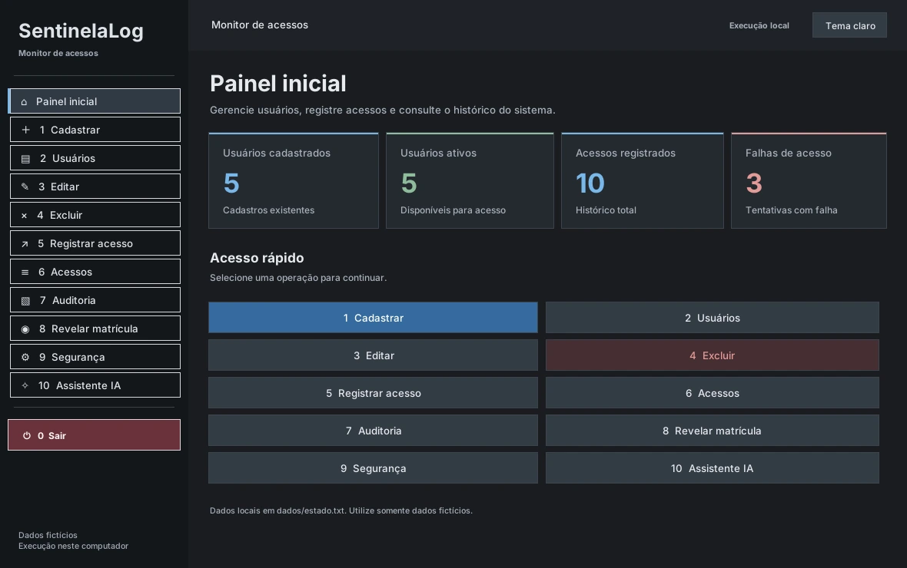
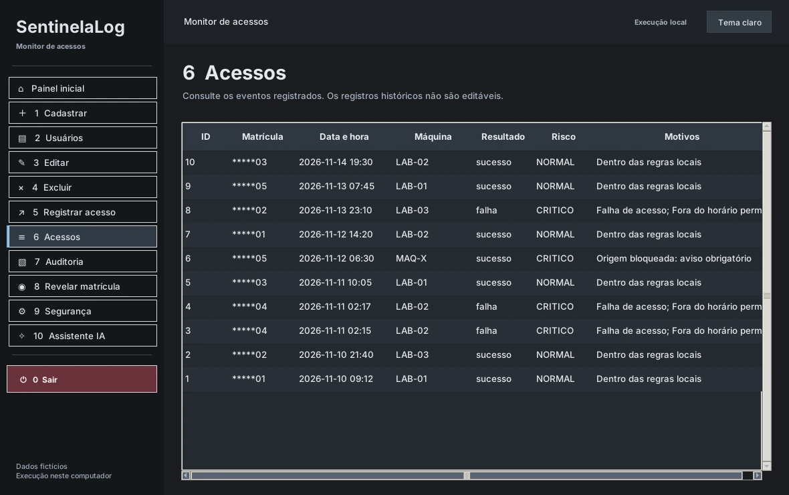

Fundamentos de Programação · CESAR School · 2026Programming Fundamentals · CESAR School · 2026
SentinelaLog
Imagine um porteiro que anota tudo e, quando desconfia de alguém, explica exatamente o porquê. É isso que o SentinelaLog faz com os acessos a um laboratório (fictício, ainda bem).Picture a doorman who writes everything down and, when he gets suspicious, explains exactly why. That's what SentinelaLog does with access to a lab (a fictional one, luckily).


- Primeiro, o painel: um resumo rápido de como anda o laboratório.First, the dashboard: a quick look at how the lab is doing.
- Depois, a lista de acessos. Cada linha conta quem entrou e quando.Then the access list. Each row tells who came in and when.
- E a melhor parte: quando algo é suspeito, ele explica o motivo. Nada de alerta misterioso.And the best part: when something looks suspicious, it explains why. No mystery alerts.
Como funcionaHow it works
O programa registra quem entrou, quando e por onde. Se algo foge do normal, ele marca o acesso como suspeito e mostra o motivo, em vez de só piscar um alerta vermelho e deixar você adivinhando.The program logs who came in, when and through where. If something looks off, it flags the access as suspicious and shows the reason, instead of just flashing a red alert and leaving you guessing.
E se bater a dúvida, um assistente de IA opcional responde perguntas sobre os registros.And if you're unsure, an optional AI assistant answers questions about the logs.
Minha parteMy part
Foi um trabalho de seis pessoas. Eu fiquei com a porta de entrada do programa e com a costura entre as partes de cada um, que é onde costuma dar mais trabalho.It was a six-person project. I took the program's front door and the stitching between everyone's parts, which is usually where the hard work hides.
Os dados são todos inventados, e o programa roda só no computador. Ele foi entregue em 18 de novembro, com versão para Windows.All the data is made up, and the program runs only on the computer. It shipped on November 18, with a Windows version.